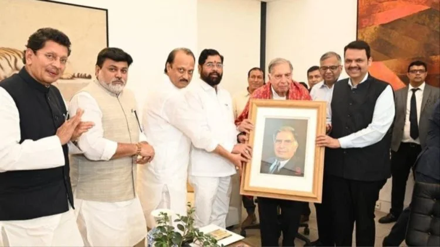
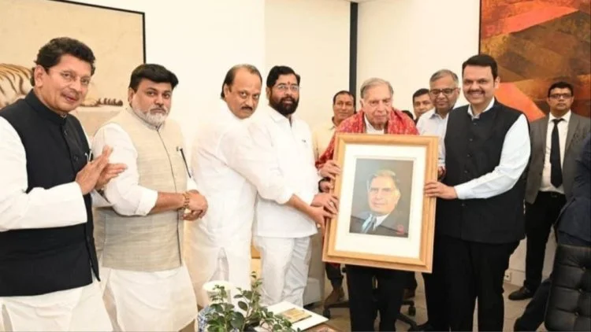

RATAN TATA
I don't believe in work-life balance. I believe in work-life integration. Make your work and life meaningful and fulfilling, and they will complement each other -"RATHAN TATA"
Biography

Ratan Naval Tata is an Indian industrialist, philanthropist and former chairman of Tata Sons. He was a chairman of the Tata Group from 1990 to 2012, and interim chairman from October 2016 through February 2017. He continues to head its charitable trusts. In 2008, he received the Padma Vibhushan, the second highest civilian honour in India, after receiving the Padma Bhushan, the third highest civilian honour in 2000.He is the son of Naval Tata, who was adopted by Ratanji Tata, son of Jamsetji Tata, the founder of the Tata Group. He graduated from the Cornell University College of Architecture with a bachelor's degree in architecture. He joined Tata in 1961, where he worked on the shop floor of Tata Steel. He later succeeded J. R. D. Tata as chairman of Tata Sons upon the latter's retirement in 1991. Under his tenure the Tata Group acquired Tetley, Jaguar Land Rover, and Corus, in an attempt to turn Tata from a largely India-centric group into a global business. Tata is also one of the largest philanthropists in the world, having donated around 60–65% of his income to charity.Ratan Tata was born in Bombay, now Mumbai, during the British Raj, into a Parsi Zoroastrian family, on 28 December 1937.He is the son of Naval Tata, who was born in Surat and later adopted into the Tata family, and Sooni Tata, the niece of Tata group founder Jamsetji Tata. Tata's biological grandfather, Hormusji Tata, was a member of the Tata family by blood. In 1948, when Tata was 10, his parents separated, and he was subsequently raised and adopted by Navajbai Tata, his grandmother and widow of Ratanji Tata.[9] He has a younger brother Jimmy Tataand a half-brother, Noel Tata, from Naval Tata's second marriage with Simone Tata, with whom he was raised.He studied at the Campion School, Mumbai till the 8th class. After which, he studied at the Cathedral and John Connon School in Mumbai, the Bishop Cotton School in Shimla, and the Riverdale Country School in New York City, which he graduated from in 1955After graduating from high school, Tata enrolled in Cornell University, from which he graduated with a bachelor's degree in architecture in 1959. In 2008, Tata gifted Cornell $50 Million, becoming the largest international donor in the university's historyIn the 1970s, Tata was given a managerial position in the Tata group. He achieved initial success by turning the subsidiary National Radio and Electronics (NELCO) around, only to see it collapse during an economic slowdownIn 1991, J. R. D. Tata stepped down as chairman of Tata Sons, naming him his successor. Initially, Tata faced stiff resistance from the heads of various subsidiaries, who had a large amount of operational freedom under the senior Tata's tenure. In response, Tata implemented a number of policies designed to consolidate power, including the implementation of a retirement age, having subsidiaries report directly to the group office, and requiring subsidiaries to contribute their profit to building the Tata group brand. Tata prioritised innovation and delegated many responsibilities to younger talent
CLICK
Achievements

Tata received the Padma Bhushan in 2000 and Padma Vibhushan in 2008, the third and second highest civilian honours awarded by the Government of India Along with national civilian honours, Tata has also received various state civilian honours like 'Maharashtra Bhushan' in 2006 for his huge work in the public administration in Maharashtra and 'Assam Baibhav' in 2021 for his exceptional contribution towards furthering cancer care in AssamRatan Tata had set out to reestablish the groups’ identity. For this, it was very important that he welded the organization together in a more cohesive way than it had been in the past so that it could identify itself more as a group. This new identity couldn’t have the same rusty image the company had over the years. Factors that helped here were the infusion of younger talent which made way for innovation and disinvestments from several companies.One of Tata’s biggest achievements would be of the role it played in the Indian Automobile Industry. Although one would think of Nano when it comes to Tata, it is actually Indica which brought forward this revolution. The Indian truck maker set its eyes on creating India’s first truly Indian car, ‘Indica’. The car was the brainchild of Tata. He promised a vehicle with the dimensions of a (Maruti) Zen, the cabin size of an Ambassador, and the fuel efficiency of a Maruti 800. Its launch in December 1998 transition the group into serious car-making. Today the group has gone ahead to become one of the largest car companies in India. Despite the manufacturing and quality problems an initial loss ( ₹ 500 crore loss declared in 2001), the Indica became a bestseller and marked the real entry of Tata Motors into cars, although the company had already signaled its intent with the launch of the Sierra, which would be called a cross-over vehicle today, and the Estate, a station wagon. Another revolutionary introduction by the Tata’s was the Nano. The Nano was the dearest project of Ratan Tata. He decided to create a car at a price-point within reach of the average Indian consumer after seeing a family of 4 on a motorbike in the heavy Bombay rains. His concern for the safety of nuclear families led to him promising to make a car that would cost only a lakh rupee. Tata implemented all means to reduce its price and maintenance cost. He was the one who suggested that the car should be fitted with just one windscreen wiper. Despite these efforts at the time of the launch, the cost of the car was still higher. But since he had made a promise he went ahead and delivered on the promise. Today Tata also serves on the boards of Fiat SpA, Alcoa, Mitsubishi, the American International Group, and Rolls Royce. Another one of Ratan Tata’s greatest achievements was taking the Tata group to a global stage. This was made possible over a series of acquisitions. In 2000 the group acquired London-based Tetley Tea, in 2004 it purchased the truck-manufacturing operations of South Korea’s Daewoo Motors, and Indian Hotels Co. Ltd took over management of The Pierre in New York. Tata’s biggest acquisition was its purchase of Anglo-Dutch steelmaker Corus Group Plc in 2007. The company has since been renamed Tata Steel Europe. The acquisition of Corus, which was Europe’s second-largest steelmaker, catapulted the company into becoming the world’s seventh-largest steel producer Under Ratan Tata, TCS went public and Tata Motors was listed in the New York Stock Exchange giving it international recognition. During the 21 years, he led the Tata Group, revenues grew over 40 times, and profit, over 50 times. Among many other honors accorded him during his career, He is also the recipient of two of the highest civilian awards of India, the Padma Vibhushan (2008) and Padma Bhushan (2000).
CLICK
Gallery


 

Quotes
- "None can destroy iron, but its own rust can! Likewise, none can destroy a person, but their own mindset can."
- "Take the stones people throw at you and use them to build a monument."
- "I don't believe in taking right decisions. I take decisions and then make them right."
- "The day I am not able to fly will be a sad day for me."
- "The strongest thing I ever did was to show my emotions to the world."